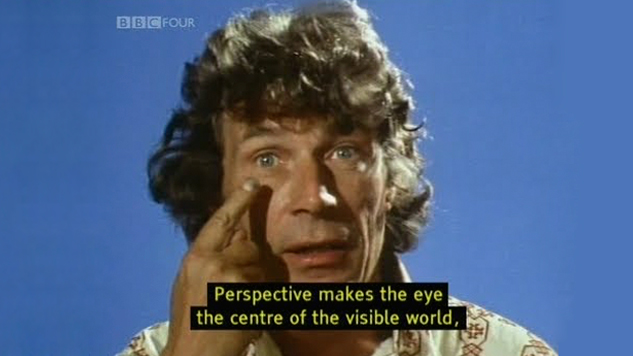

Week Two Assignment
Ways Of Seeing

In the four part documentary, “Ways Of Seeing”, John Berger introduces a conversation around traditional European oil paintings. In the first part of the series he mentions the camera, and how the creation of the camera has sparked a new way of interpreting art. The camera can reproduce anything and make whatever form of art visible for anyone to see, which means paintings are no longer held in one area and viewers are not forced to travel long distances to see a piece of art on display. This brings a new era of convenience and accessibility, and sometimes this method is more cost efficient as well. But while all of this is our new reality of appreciating art, Berger is sure to emphasize that mass reproduction of art is no way to replace the essence of an original piece because details in the image can become warped and distorted in its reprinting.
Berger then switches over to describe how movement and sound placed on a still image can quickly influence the experience the viewer receives. We are presented with various paintings with their own subjective meaning, and we are given examples of what happens when fast movements and music with a higher tempo gives off the feeling of urgency as the camera is there to switch focus with other subjects on the painting. The same is also said when solemn music and a lingering camera perspective creates a feeling of melancholy. This is all to say that sound, music, as well as text alongside an image can alter the meaning quickly and effectively.

In episode 2, Berger starts off with talking about nude oil paintings and how they were not uncommon to see when looking at traditional art. Nudity was centered mainly around women, as one can see that artists would commonly have a woman painted in the nude. Back then nudity was not considered a big deal, but rather the rawest form of the human body as there are no disguises to mask that vulnerability. However, Berger mentions the hypocrisy with men and their portrayal of women in classical art. For example, mirrors in a painting became a symbol of vanity, yet women are consistently drawn in a position where they are gazing at themselves in the mirror. The hypocrisy comes from men wanting to paint women for their own pleasure, but when they are seen holding a mirror they are called vain.
There are only very few paintings of women being “seen as themselves” while also being naked. This is because in the compositions of the painting, women are rarely seen looking at the man and she is more often than not looking away and in a “submissive” position, which is just another way for men to be pleased. When Berger conducted his discussion with a selection of women of different ages, a main point to come up is how none of them feel a relation to the paintings because it’s rarely an accurate portrayal, whereas with a photograph there is nothing that’s exaggerated and it’s an unfiltered perspective.
